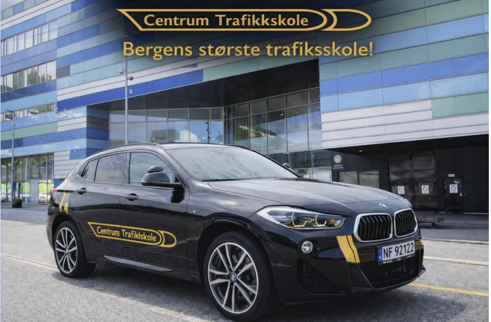

Av Tuva Aasgard – 5. mars 2026

Av Tuva Aasgard – 05.03.26
Denne artikkelen er i betalt samarbeid med Centrum trafikkskole
Her kan du lese informasjon om Centrum trafikkskole og fordeler med å velge de. For det er det mange av, så les gjerne videre!
Centrum trafikkskole er Bergens største trafikkskole, med 30 kjørelærere, dekker de hele Bergensområdet. De holder til i Bergen sentrum og i Laguneparken. Adressen deres i sentrum er: Vestre Strømkaien 9, 5008 og adressen i Laguneparken er Laguneveien 11, 5239. De er oppe fra 09.00-15.00 på mandag til torsdager og 09:00-14:30 om fredager.
Kursene de tilbyr er: «førerkort for bil», «førerkort for tilhenger», «førerkort for MC», «førerkort for moped», «trafikant i mørket» (mørkekjøringskurs) og «trafikalt grunnkurs». De har også et bredt utvalg innenfor de ulike kursene, så du kan finne opplæringen som passer for akkurat deg! Her kan du lese mer om kursene de tilbyr, og sjekke ut priser: https://centrumtrafikk.no/
4 grunner til hvorfor du bør velge Centrum trafikkskole:
· De har prismatch på kjøretimer klasse B, så hvis du klarer å dokumentere lavere priser hos en trafikkskole i sentrum, Fana eller Åsane kan Centrum tilby tilsvarende pris.
· Når du blir kjøreskoleelev hos Centrum får du et «elevfordelskort» som er et samarbeid de har med en rekke bedrifter. Bla. kan du ved å vise dette kortet få 10% på Peppes pizza. De andre fordelene kan du lese her: https://centrumtrafikk.no/elevfordeler/
· De har laget fem aktuelle oppkjøringsruter. For eksempel fra Åsane til Fyllingsdalen, som er svært aktuell til oppkjøringsdagen. Her kan du se de fem rutene som Centrum har satt opp: https://centrumtrafikk.no/oppkjoringsruter-i-bergen/
· Centrum var den første trafikkskolen i Bergen som ble miljøtårn-sertifisert. Det betyr at de driver bærekraftig virksomhet, noe som er verdt å støtte!
Møteplassene deres er kontoret i sentrum og Laguneparken, Åsane: Circle K/v Åsane bussterminal, Bergen Vest: Esso Vestkanten og Arna: Togstasjonen i Bergen.
Hvordan kan du kontakte de?
Du kan enkelt bestille kjøretime her: https://centrumtrafikk.no/. Eller så kan du kontakte de på telefon: 55907300 eller mail: centrum@centrumtrafikk.no (sentrum) / lagunen@centrumtrafikk.no (Lagunen). De har også en egen chatbot inne på nettsiden som gir umiddelbart svar på spørsmål! I tillegg poster de jevnlig på både Instagram og Tiktok: @centrumtrafikk. Og på Facebook «Centrum trafikkskole».
Vi i SkramAvis syntes at dette tilbudet høres fantastisk ut! Og vi kommer til å benytte oss av Centrum trafikkskole, noe vi håper dere også kommer til. Vi har snakket med bekjente som har vært elev hos Centrum, og de har en svært god opplevelse!
For mer informasjon
https://centrumtrafikk.no